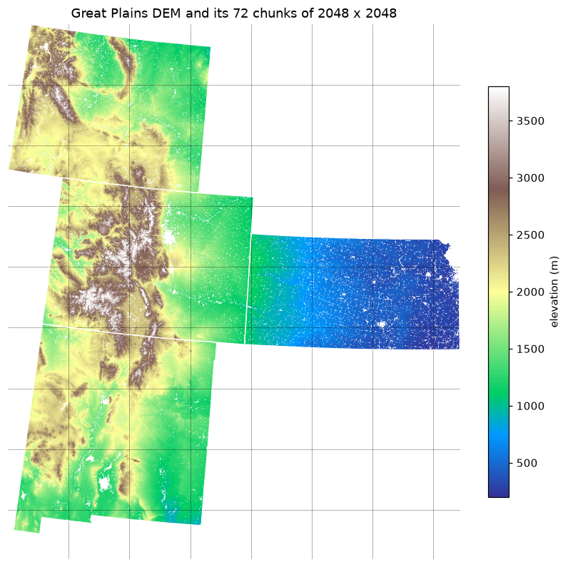
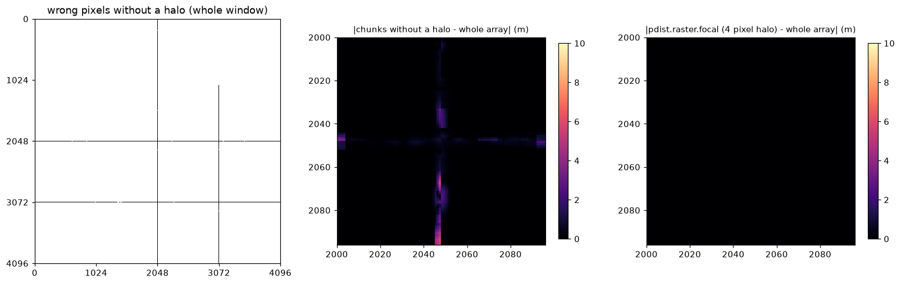
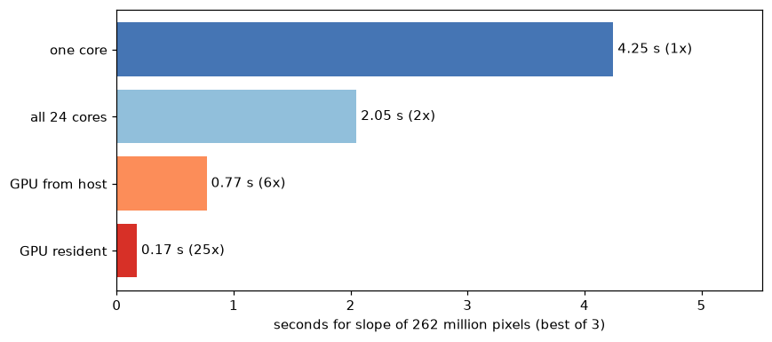
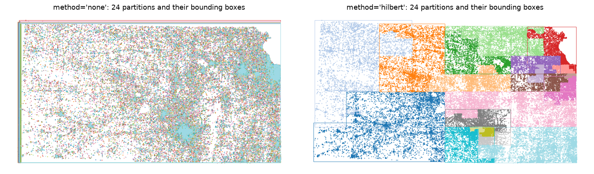

Why Spatial Data Outgrow One Core, and What to Do About It
A 90 m elevation model of the Great Plains has 262 million pixels and takes a gigabyte of memory. The same region in the 10 m Cropland Data Layer has 21 billion pixels, and the whole United States 152 billion. Kansas alone has 1.6 million mapped buildings, and New York City logged 38 million yellow taxi trips in 2023. Data of this size do not fit comfortably in one Python process, and a loop over them on one core takes minutes to hours. This notebook explains the ideas that make such data tractable: chunks and partitions, halos, shuffles, lazy task graphs, GPU memory and spatial ordering. It then introduces geolattice.distributed, the part of GeoLattice that applies those ideas to rasters and vectors with one API for one core, all cores, a cluster or a GPU, and measures one terrain operation all four ways.
Overview
Two reasons to leave one core
Too large. The data do not fit in memory (the 10 m CDL is 152 GB as bytes), or they fit but leave no room for the intermediate arrays an analysis creates. A slope calculation on a 1 GB DEM allocates several more gigabytes of temporaries.
Too slow. The data fit, but one core takes too long, or the analysis must be repeated many times (999 permutations of a spatial statistic, a model fitted for every fold of a cross-validation, a prediction for every pixel).
Three ways out, and what each costs
Route
What it gives
What it costs
All cores of one machine
8 to 128 workers that share memory
memory bandwidth is shared too; Python’s GIL blocks pure Python threads
Many machines (a cluster)
memory and cores without a fixed limit
data travel over the network; a scheduler and serialization add overhead
A GPU
thousands of simple cores and very fast memory
data must be copied to the device and back over PCIe; device memory is small (8 to 80 GB)
Embarrassingly parallel and communication-heavy work
Some spatial operations split cleanly: NDVI, a reclassification or a slope calculation needs only each pixel (and for slope, its 8 neighbours), so each piece of the raster can be processed alone. Others need information from far away: flow accumulation depends on every cell upstream, a spatial join must find every polygon that touches every point, and a weights matrix links each observation to its neighbours wherever they fall. The first kind scales almost linearly with workers; the second needs data exchange, and the exchange often limits the speed-up.
Amdahl’s law
If a fraction p of the work can run in parallel and the rest is serial, the speed-up on n workers is
S(n) = 1 / ((1 - p) + p / n)
With p = 0.9 the speed-up can never exceed 10, however many cores are added. In geospatial work the serial part is often reading and decoding files, moving data between host and GPU, or assembling the result. Measuring where the time goes (notebook 11) matters more than adding hardware.
The ideas behind parallel spatial computing
Idea
Meaning
Spatial example
Chunk (raster) or partition (table)
a piece of the data that one task processes
a 2048 x 2048 block of the DEM; 1/24 of the buildings
Halo (overlap, ghost cells)
extra border pixels a chunk borrows from its neighbours
slope needs 1 pixel, a 9 x 9 mean 4 pixels
Shuffle
moving rows between partitions so that matching keys meet
taxi trips regrouped by zone; a join of two tables partitioned differently
Lazy task graph
a recipe of tasks recorded first and run only when a result is asked for
Dask arrays and dask-geopandas frames
Host and device memory
RAM used by the CPU, and separate memory on the GPU
copying a 1 GB DEM to the GPU takes about 0.15 s over PCIe
Spatial ordering
sorting features so that neighbours share a partition
a Hilbert curve through building centroids
Rasters and vectors differ
A raster is a regular grid: any rectangle of rows and columns is a valid chunk, its neighbours are known from its position, and a halo of h pixels makes a moving window exact. Vector features have irregular shapes and sizes and no implied neighbours. A partition of polygons can overlap any other partition, so a spatial join must test pairs of partitions; ordering features along a space-filling curve keeps each partition compact, and a quick test of partition bounding boxes (partition pruning) rules out most pairs before any geometry is compared.
Distributed Spatial Computing with GeoLattice
geolattice.distributed, imported as pdist, gives one API for these routes. Three rules hold for every function:
compute="auto" | "cpu" | "gpu"."auto" uses the GPU when a CUDA device and a GPU implementation exist, otherwise the CPU; asking for "gpu" on a machine without one falls back to the CPU with a single warning, so notebooks run anywhere.
Same type and memory space out as in. NumPy in gives NumPy out, a GeoDataFrame gives a GeoDataFrame, a CuPy array stays on the GPU, and a lazy Dask input stays lazy.
Local threads unless a session is started. Without a cluster, Dask’s threaded scheduler uses every core. pdist.start("local"), pdist.start("cuda"), pdist.start("slurm") and friends move the same code onto a cluster (notebook 01).
Behind the API sits a registry of operations. Each operation registers a CPU implementation and, where one exists, a GPU implementation; pdist.list_ops() lists them and pdist.explain(op) says which one would run and why.
Learning objectives
Say when data or work outgrow one core, and choose between more cores, a cluster and a GPU.
Explain chunks, halos, shuffles, lazy task graphs, host and device memory, and spatial ordering.
Apply Amdahl’s law to a measured speed-up curve.
Use pdist.capabilities, pdist.list_ops and pdist.explain to see what will run where.
Compute slope on a 262 million pixel DEM on one core, all cores and a GPU, and check that the results agree.
Show why a moving window needs a halo, and why vector partitions need spatial ordering.
Data
Dataset
Content
Great Plains elevation, Data/03_spatial_analysis/Great_plain/Raster/elev.tif
90 m DEM of Colorado, Kansas, New Mexico and Wyoming, 17,196 x 15,245 pixels (262 million), float32, EPSG:5070, 128 x 128 internal tiles
Kansas building footprints
1.6 million Microsoft building polygons from Planetary Computer, cached by dd.kansas_buildings() (first run downloads 180 MB)
Contents
Setup
What this machine has
The operation registry
A raster larger than it looks
Lazy task graphs
Chunks need halos
Slope four ways
Where the GPU time goes
Amdahl’s law in practice
Vector partitions need spatial order
Summary and exercises
Setup
Code
import warnings # warning controlwarnings.filterwarnings("ignore") # hide routine library warningsimport os # environment and CPU countimport time # wall-clock timingfrom pathlib import Path # file pathsimport matplotlib.pyplot as plt # figuresimport numpy as np # arraysimport pandas as pd # tablesimport geopandas as gpd # vector dataimport xarray as xr # labelled rastersimport geolattice # GeoLatticeimport geolattice.distributed as pdist # distributed and GPU spatial computingimport dist_data as dd # chapter helper: paths, cached downloads, timersplt.rcParams.update({"figure.dpi": 110}) # figure resolutionpd.set_option("display.width", 140) # wider printed tablesOUT = Path("outputs") # results and scratch files written by this chapterOUT.mkdir(exist_ok=True) # create it if neededcaps = pdist.capabilities() # engines and GPUs on this machineprint("GeoLattice", geolattice.__version__, "|", os.cpu_count(), "CPU cores |", caps["gpus"], "GPU(s)", # versionsf"({caps.get('gpu_memory_total', 0) /1e9:.0f} GB)"if caps["gpus"] else"") # GPU memoryimport dask # Dask configuration and schedulersimport dask.array as da # chunked arraysimport scipy.ndimage as ndi # whole-array image filters for comparison
pdist.capabilities() reports which optional engines import and how many CUDA GPUs are visible; pdist.memory_report() reports host and GPU memory.
Code
cap = pd.Series(caps).rename("available") # engines and GPU count as a columnprint(cap.to_string()) # one line per enginemem = pdist.memory_report() # host, process and GPU memory in GB{k: v for k, v in mem.items() ifnotisinstance(v, dict)} # the scalar entries
This machine has CuPy, cuDF, cuML and cuGraph (the RAPIDS GPU libraries), dask-cuda for GPU workers, dask-jobqueue and dask-kubernetes for clusters, and Apache Sedona for Spark. cuSpatial is not installed and not needed: GeoLattice’s GPU geometry kernels are written in CuPy. On a laptop without a GPU the same notebooks run, with gpus 0 and every GPU cell falling back to the CPU.
The operation registry
Code
ops = pd.DataFrame([(op.split(".")[0], op.split(".")[1], ", ".join(t)) for op, t in pdist.list_ops().items()], # registry as rows columns=["module", "operation", "targets"]) # column namesprint(len(ops), "operations;", (ops.targets =="cpu, gpu").sum(), "with a GPU implementation") # totalsops.groupby("module").agg(operations=("operation", "size"), # operations per submodule gpu=("targets", lambda t: int((t =="cpu, gpu").sum())), # how many have a GPU version names=("operation", lambda s: ", ".join(s))) # their names
44 operations; 35 with a GPU implementation
operations
gpu
names
module
analysis
7
7
dbscan, gearys_c, hdbscan, kde, kmeans, local,...
bridge
4
3
extract_values, polygonize, rasterize, zonal_s...
hydrology
3
1
fill_depressions, flow_accumulation, flow_dire...
ml
1
1
predict_raster
network
3
3
centrality, components, sssp
raster
15
15
aspect, calc, convolve, curvature, focal, hill...
vector
11
5
area, bounds, buffer, centroid, clip, knn, len...
Code
for op in ["raster.slope", "bridge.rasterize", "analysis.dbscan", "hydrology.flow_accumulation"]: # four examples e = pdist.explain(op) # which implementation runs with compute="auto"print(f"{op:28s} uses {e['uses']}: {e['reason']}") # decision and reasonprint(pdist.explain("bridge.rasterize", compute="gpu")["uses"], "when compute='gpu' is asked for") # opt-in GPU
raster.slope uses gpu: GPU implementation and 1 GPU(s) available
bridge.rasterize uses cpu: GPU version is opt-in (slower on typical inputs); pass compute='gpu'
analysis.dbscan uses cpu: GPU version is opt-in (slower on typical inputs); pass compute='gpu'
hydrology.flow_accumulation uses cpu: no GPU implementation registered
gpu when compute='gpu' is asked for
Most operations have both versions. Two kinds of exceptions are worth knowing. Some GPU versions are opt-in: measured on typical inputs the CPU was faster (GDAL’s scanline fill for rasterize, scikit-learn’s KD-tree for DBSCAN and nearest neighbours, GEOS for simple vector measures, notebook 04), or the GPU library gave a different answer (cuML’s HDBSCAN, notebook 06), so "auto" keeps the CPU and only an explicit compute="gpu" uses the device. Depression filling, flow accumulation, polygonize and the per-feature geometry operations (buffer, simplify, clip) have no GPU version at all.
A raster larger than it looks
pdist.read_raster opens the DEM lazily: it reads the header, not the pixels, and returns an xarray DataArray backed by a Dask array cut into chunks.
Code
dem = dd.gp_raster("elev") # lazy DataArray, 2048 x 2048 chunksprint(f"shape {dem.shape}, {dem.size /1e6:.0f} million pixels, {dem.dtype}, {dd.gb(dem.nbytes)} in memory") # sizeprint(f"chunks {dem.data.chunksize}, {dem.data.npartitions} chunks, is lazy: {pdist.is_lazy(dem)}") # how it is cutprint("CRS", dem.rio.crs.to_epsg(), "| resolution", dem.rio.resolution()) # georeferencing
shape (17196, 15245), 262 million pixels, float32, 1.05 GB in memory
chunks (2048, 2048), 72 chunks, is lazy: True
CRS 5070 | resolution (90.0, -90.0)
Code
small = dd.quicklook(dem, 20) # every 20th pixel (1.8 km), computedfig, ax = plt.subplots(figsize=(7.5, 7.5)) # one mapim = ax.imshow(small, extent=dd.extent(small), cmap="terrain", vmin=200, vmax=3800) # elevationplt.colorbar(im, ax=ax, shrink=0.75, label="elevation (m)") # scaleys, xs = dem.data.chunks # chunk sizes along y and xfor e in np.cumsum(xs)[:-1]: # vertical chunk seams ax.axvline(float(dem.x[e]), color="k", lw=0.4, alpha=0.5) # one line per seamfor e in np.cumsum(ys)[:-1]: # horizontal chunk seams ax.axhline(float(dem.y[e]), color="k", lw=0.4, alpha=0.5) # one line per seamdd.gp_states().boundary.plot(ax=ax, color="w", lw=0.8) # state outlinesax.set_title(f"Great Plains DEM and its {dem.data.npartitions} chunks of 2048 x 2048"); ax.set_axis_off() # titleplt.tight_layout(); plt.show() # draw

Each square is one chunk, the unit of work Dask hands to a worker. About half the pixels lie outside the four states and are NaN, and small no-data holes are scattered inside them. A whole chunk of NaN still costs a read and a task, which is one reason cropped or masked data are cheaper than their rectangle suggests.
Lazy task graphs
Calling a function on a lazy input records tasks instead of computing. The slope below is returned almost instantly, as a recipe of read, overlap and slope tasks per chunk; it runs when .compute() (or plotting, or writing) asks for numbers.
Code
t = time.perf_counter() # start the clocks_lazy = pdist.raster.slope(dem, compute="cpu") # lazy: records tasks, computes nothingprint(f"built in {time.perf_counter() - t:.3f} s | lazy: {pdist.is_lazy(s_lazy)} | "# nearly freef"{len(s_lazy.data.__dask_graph__())} tasks for {s_lazy.data.npartitions} output chunks") # graph sizelayers = s_lazy.data.__dask_graph__().layers # the high-level graph, one layer per stepprint([k.split("-")[0] for k in layers]) # the steps in order
built in 0.005 s | lazy: True | 1631 tasks for 72 output chunks
['concatenate', 'concatenate', 'original', 'open_rasterio', 'getitem', 'rechunk', 'getitem', 'getitem', 'getitem', 'getitem', 'overlap', 'getitem', 'lambda', '_trim']
Code
with dd.timer("slope of the lazy DEM, read from disk and computed on all cores"): # time the whole chain s_all = s_lazy.compute() # run the graphprint(type(s_all.data).__name__, f"{dd.gb(s_all.nbytes)}, mean slope {float(s_all.mean()):.2f} degrees") # in memory now
slope of the lazy DEM, read from disk and computed on all cores: 2.35 s
ndarray 1.05 GB, mean slope 4.48 degrees
The graph has a few tasks per chunk: one to read it, a few to share edge pixels with its neighbours (the halo, next section), and one to compute slope. Dask runs them on all cores as soon as their inputs are ready, reading one chunk while computing another.
Chunks need halos
Slope at a pixel uses its 8 neighbours, and a 9 x 9 moving mean uses 80. A chunk processed on its own lacks the neighbours that lie in the next chunk, so its edge pixels come out wrong. The fix is a halo: each chunk borrows h rows and columns from its neighbours, computes, and trims them again. pdist.raster adds the halo every moving-window operation needs. The cell below compares three 9 x 9 means on a 4096 x 4096 window: the whole array at once (the reference), chunks without a halo, and pdist.raster.focal.
Code
win = dem[6000:10096, 6000:10096].compute() # a 4096 x 4096 window in memorywin = win.fillna(float(win.mean())) # fill the scattered no-data holes (same input for every method)ref = ndi.uniform_filter(win.values, 9, mode="nearest") # whole-array 9 x 9 mean: the referencenaive = da.from_array(win.values, chunks=1024).map_blocks( # 16 chunks, each filtered alonelambda b: ndi.uniform_filter(b, 9, mode="nearest")).compute() # no halohalo = pdist.raster.focal(win, "mean", size=9, chunks=(1024, 1024)) # GeoLattice adds a 4 pixel halofor name, r in [("chunks without a halo", naive), ("pdist.raster.focal", halo.values)]: # compare both bad = np.abs(r - ref) >1e-3# pixels that differ from the referenceprint(f"{name:24s} wrong pixels: {bad.sum():7d} ({bad.mean():.2%}), largest error {np.abs(r - ref).max():.2f} m") # error
chunks without a halo wrong pixels: 165261 (0.99%), largest error 208.12 m
pdist.raster.focal wrong pixels: 0 (0.00%), largest error 0.00 m
Code
z = (slice(2048-48, 2048+48), slice(2048-48, 2048+48)) # 96 x 96 pixels around a seam crossingfig, ax = plt.subplots(1, 3, figsize=(15, 4.6)) # three panelsim = ax[0].imshow(np.abs(naive - ref) >1e-3, cmap="Greys", interpolation="nearest") # where the no-halo result is wrongax[0].set_title("wrong pixels without a halo (whole window)") # whole windowax[0].set_xticks(np.arange(0, 4097, 1024)); ax[0].set_yticks(np.arange(0, 4097, 1024)) # chunk seams as ticksfor a, r, t in [(ax[1], naive, "chunks without a halo"), (ax[2], halo.values, "pdist.raster.focal (4 pixel halo)")]: # zoomed errors im = a.imshow(np.abs(r - ref)[z], cmap="magma", vmin=0, vmax=10, interpolation="nearest", # error in metres extent=[2000, 2096, 2096, 2000]) # pixel coordinates a.set_title(f"|{t} - whole array| (m)", fontsize=10); plt.colorbar(im, ax=a, shrink=0.8) # labelsplt.tight_layout(); plt.show() # draw

Without a halo the errors form a grid of lines along the chunk seams wherever the terrain is not flat, four pixels wide on each side of every seam (the zoom shows the crossing at pixel 2048, 2048); with the halo the chunked result equals the whole-array result everywhere, edges included. The halo is not free: it adds reads and data copies proportional to the chunk perimeter, so the library keeps chunks at least eight halo widths wide (pdist.plan_chunks).
Slope four ways
Now the same slope on the whole in-memory DEM, computed four ways:
one core: Dask’s synchronous scheduler runs the chunks one after another;
all cores: the default threaded scheduler (NumPy and SciPy release the GIL, so threads run in parallel);
GPU from host: compute="gpu" copies each chunk to the GPU, computes there and copies the result back, because a host input must give a host output;
GPU resident: the DEM is moved to the GPU once with pdist.to_gpu, and the result stays there.
Code
d = dem.compute() # the DEM in host memory (1 GB)d_gpu = pdist.to_gpu(d) if caps["gpus"] elseNone# a copy in GPU memory, if there is a GPUdef sync(): # wait until the GPU has finished, so timings are realif caps["gpus"]: # only with a GPUimport cupy as cp # GPU arrays cp.cuda.Device().synchronize() # block until queued kernels finishdef best_of(fn, n=3): # best wall time of n runs after one warm-up run fn(); sync() # warm-up: compile kernels, fill caches times = [] # timingsfor _ inrange(n): # timed runs t = time.perf_counter(); fn(); sync(); times.append(time.perf_counter() - t) # one runreturnmin(times) # best runruns = {} # seconds per waywith dask.config.set(scheduler="synchronous"): # one task at a time runs["one core"] = best_of(lambda: pdist.raster.slope(d, compute="cpu")) # NumPy, one coreruns[f"all {os.cpu_count()} cores"] = best_of(lambda: pdist.raster.slope(d, compute="cpu")) # NumPy, threadsif caps["gpus"]: # GPU timings only where a GPU exists runs["GPU from host"] = best_of(lambda: pdist.raster.slope(d, compute="gpu")) # copies in and out runs["GPU resident"] = best_of(lambda: pdist.raster.slope(d_gpu, compute="gpu")) # stays on the devicet4 = pd.Series(runs, name="seconds").to_frame() # tablet4["speed-up vs one core"] = t4.seconds.iloc[0] / t4.seconds # relative speedt4["Mpixels per s"] = d.size /1e6/ t4.seconds # throughputt4.round(2) # show
seconds
speed-up vs one core
Mpixels per s
one core
4.25
1.00
61.74
all 24 cores
2.05
2.07
127.88
GPU from host
0.77
5.52
340.89
GPU resident
0.17
24.75
1528.06
Code
fig, ax = plt.subplots(figsize=(8, 3.6)) # one panelax.barh(t4.index[::-1], t4.seconds[::-1], color=["#4575b4", "#91bfdb", "#fc8d59", "#d73027"][:len(t4)][::-1]) # barsfor i, (s, x) inenumerate(zip(t4.seconds[::-1], t4["speed-up vs one core"][::-1])): # labels ax.text(s, i, f" {s:.2f} s ({x:.0f}x)", va="center") # time and speed-upax.set_xlabel("seconds for slope of 262 million pixels (best of 3)"); ax.set_xlim(0, t4.seconds.max() *1.3) # axisplt.tight_layout(); plt.show() # draw

All cores were only about twice as fast as one core here: slope does little arithmetic per byte, so the cores spend most of their time waiting for memory, and every core shares the same memory bus. The GPU has its own, much faster memory, and with the DEM already on the device it was about an order of magnitude faster than all CPU cores. Copying a gigabyte in and a gigabyte back costs more than the computation, so “GPU from host” lands between the two. The lesson recurs in every notebook: keep data on the GPU across several operations, and move it only at the start and the end.
pdist.check_equivalence runs a function on each target and compares the results; the CPU and GPU slopes agree to float32 rounding.
Code
rep = pdist.check_equivalence(pdist.raster.slope, d, rtol=1e-4, atol=1e-3) # CPU vs GPU on the full DEMprint("equivalent:", rep.ok, "| largest difference", f"{rep.max_abs:.2e} degrees") # verdictprint(*rep.details, sep="\n") # what was compared
equivalent: True | largest difference 1.53e-05 degrees
ok gpu vs cpu: allclose max_abs=1.53e-05
Where the GPU time goes
Splitting the “GPU from host” run into its three parts shows why transfers matter.
Code
if caps["gpus"]: # needs a GPUimport cupy as cp # GPU arrays parts = {} # seconds per step t = time.perf_counter(); g = cp.asarray(d.values); sync(); parts["copy to GPU"] = time.perf_counter() - t # host to device gda = d.copy(data=g) # the same DataArray around GPU data pdist.raster.slope(gda, compute="gpu"); sync() # warm-up t = time.perf_counter(); r = pdist.raster.slope(gda, compute="gpu"); sync(); parts["slope on GPU"] = time.perf_counter() - t # compute t = time.perf_counter(); h = r.data.get(); parts["copy to host"] = time.perf_counter() - t # device to host parts = pd.Series(parts, name="seconds") # tableprint(parts.round(3).to_string());print(f"PCIe throughput about {d.nbytes / parts['copy to GPU'] /1e9:.1f} GB/s") # transfer speeddel g, gda, r, h # free GPU memory
copy to GPU 0.137
slope on GPU 0.173
copy to host 0.166
PCIe throughput about 7.7 GB/s
Amdahl’s law in practice
The threaded run can be repeated with 1, 2, 4, … workers. Fitting Amdahl’s law to the measured speed-ups estimates the parallel fraction p of this workload on this machine.
Code
from scipy.optimize import curve_fit # least-squares fitworkers = [1, 2, 4, 8, 12, 16, os.cpu_count()] # thread counts to trysecs = [] # best time per countfor n in workers: # each thread countwith dask.config.set(scheduler="threads", num_workers=n): # n threads secs.append(best_of(lambda: pdist.raster.slope(d, compute="cpu", chunks=(1024, 1024)), n=2)) # time itspeed = secs[0] / np.array(secs) # measured speed-upamdahl =lambda n, p: 1/ ((1- p) + p / n) # the lawp_fit, _ = curve_fit(amdahl, np.array(workers, float), speed, p0=[0.9], bounds=(0, 1)) # fitted parallel fractionprint("seconds:", dict(zip(workers, np.round(secs, 2))), f"| fitted p = {p_fit[0]:.2f}") # results
The curve peaks at about four threads and then falls slightly. Amdahl’s law fits it with a parallel fraction near 0.6, as if 40 % of the work were serial. Little of slope is really serial; the limit is memory bandwidth. Slope does a few additions per pixel, so a handful of cores already saturate the memory bus, and more threads only add contention. A compute-heavy operation (a 9 x 9 median, a model prediction) scales much better, as notebooks 03 and 09 show. Either way, measure before buying hardware.
Vector partitions need spatial order
For vectors the unit of work is a partition: a slice of the rows. pdist.spatial_partition cuts a GeoDataFrame into partitions; with method="none" the rows keep their current order, with method="hilbert" they are first sorted along a Hilbert curve, which visits nearby places consecutively. pdist.partition_bounds returns each partition’s bounding box. The building cache was written Hilbert-sorted already (pdist.write_vector does that by default), so the cell below draws a random sample, whose rows are in arbitrary order, as rows sorted by an attribute or an ID would be.
Code
bld = dd.kansas_buildings() # 1.6 million building polygons (downloads once)pts = bld.set_geometry(bld.geometry.representative_point()).to_crs(5070).sample(200_000, random_state=0) # a sample of points inside themprint(f"{len(bld):,} buildings; using {len(pts):,} sample points") # sizesparts = {m: pdist.spatial_partition(pts, 24, method=m) for m in ["none", "hilbert"]} # 24 partitions each wayfor m, p in parts.items(): # both methods b = pdist.partition_bounds(p) # (24, 4) bounding boxes area = ((b[:, 2] - b[:, 0]) * (b[:, 3] - b[:, 1])).sum() /1e6# summed bounding-box area, km2print(f"{m:8s} sum of partition bounding boxes {area:12,.0f} km2 ({area /213_100:.1f} x the area of Kansas)") # compactness
1,605,334 buildings; using 200,000 sample points
none sum of partition bounding boxes 5,380,857 km2 (25.3 x the area of Kansas)
hilbert sum of partition bounding boxes 300,673 km2 (1.4 x the area of Kansas)
Code
from matplotlib.patches import Rectangle # boxesfig, axs = plt.subplots(1, 2, figsize=(14, 4.6)) # two mapscmap = plt.get_cmap("tab20", 24) # one colour per partitionfor ax, (m, p) inzip(axs, parts.items()): # both methodsfor i, part inenumerate(p): # each partition ax.scatter(part.geometry.x, part.geometry.y, s=0.2, color=cmap(i)) # its points x0, y0, x1, y1 = part.total_bounds # its bounding box ax.add_patch(Rectangle((x0, y0), x1 - x0, y1 - y0, fill=False, lw=0.6, color=cmap(i))) # draw it ax.set_title(f"method='{m}': 24 partitions and their bounding boxes"); ax.set_aspect("equal"); ax.set_axis_off() # titleplt.tight_layout(); plt.show() # draw

In arbitrary order every partition holds points from the whole state, so all 24 bounding boxes cover Kansas and each overlaps all the others. After Hilbert sorting each partition covers a compact patch, and the summed bounding-box area falls from 25 times to 1.4 times the area of the state. That is what makes a partitioned spatial join fast (notebook 04): a partition of points needs only the polygons whose boxes touch its own box.
Summary and exercises
Data outgrow one core when they do not fit in memory or one core is too slow; the routes out are all cores, a cluster and a GPU, each with its own costs (shared memory bandwidth, network and serialization, PCIe transfers and small device memory).
Rasters split into chunks; moving windows need a halo, without which errors line every chunk seam. Vector partitions need spatial ordering so that bounding boxes stay compact.
Lazy task graphs record work and run it on demand; building the slope graph of 72 chunks took a fraction of a millisecond per task.
On this machine slope of 262 million pixels took a few seconds on one core, about half that on all cores, and a fraction of a second on the GPU when the data stayed there. Copies to and from the GPU cost more than the computation.
pdist.capabilities, pdist.list_ops, pdist.explain and pdist.check_equivalence show what will run where and confirm that CPU and GPU agree.
Exercises
Repeat the slope timing with chunks=(512, 512) and chunks=(8192, 8192). Which is fastest on all cores, and why are both extremes slower?
Time pdist.raster.focal(d, "median", size=9) on all cores and on the GPU. Is the speed-up larger or smaller than for slope? Fit Amdahl’s law to its thread scaling.
Use the halo experiment with pdist.raster.tpi(win, window=21). How wide is the band of wrong pixels without a halo?
Partition the building sample into 6, 24 and 96 partitions with both methods and plot the summed bounding-box area against the number of partitions.